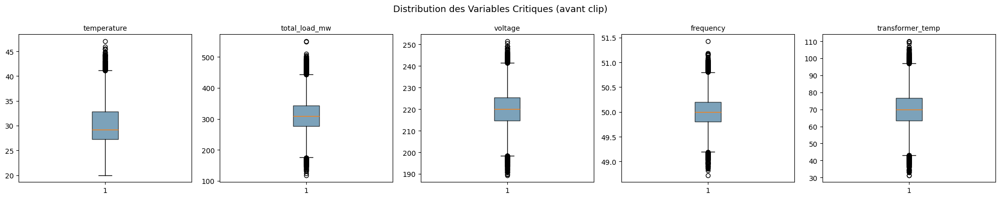

02 · Nettoyage Avancé des Données#
CEET Smart Grid – Energy Blackout Prediction#
Objectif : Nettoyer, imputer et enrichir le dataset pour le pipeline ML.
import sys
sys.path.insert(0, '../src')
import pandas as pd
import numpy as np
import matplotlib.pyplot as plt
import seaborn as sns
from data_preprocessing import (
load_raw, clean_basic, handle_missing,
handle_outliers, add_temporal_features,
add_energy_features, encode_categoricals,
run_preprocessing_pipeline
)
from utils import DATA_RAW, DATA_PROC, detect_outliers_iqr
pd.set_option('display.max_columns', 30)
2.1 Chargement et Nettoyage de Base#
df_raw = load_raw()
print(f"Brut : {df_raw.shape}")
df = clean_basic(df_raw)
print(f"Après clean_basic : {df.shape}")
print(f"Doublons supprimés : {df_raw.shape[0] - df.shape[0]}")
2026-06-14 10:46:41 | INFO | preprocessing | Chargement depuis D:\Data_Science_Lab\Data_Project_Capstone_IBM\energy-grid-blackout-prediction\data\raw\ceet_togo_smartgrid_dataset.csv
2026-06-14 10:46:42 | INFO | preprocessing | Dataset chargé : 50,000 lignes × 25 colonnes
2026-06-14 10:46:42 | INFO | preprocessing | Nettoyage de base...
2026-06-14 10:46:42 | INFO | preprocessing | Nettoyage de base terminé
Brut : (50000, 25)
Après clean_basic : (50000, 25)
Doublons supprimés : 0
2.2 Traitement des Valeurs Manquantes#
print("Avant imputation :")
print(df.isnull().sum()[df.isnull().sum() > 0])
df = handle_missing(df)
print("\nAprès imputation :")
print(df.isnull().sum()[df.isnull().sum() > 0])
print("\n Aucune valeur manquante restante" if df.isnull().sum().sum() == 0 else "⚠️ Valeurs manquantes restantes")
2026-06-14 10:46:42 | INFO | preprocessing | Traitement des valeurs manquantes...
Avant imputation :
Series([], dtype: int64)
2026-06-14 10:46:42 | INFO | preprocessing | Valeurs nulles restantes : 0
Après imputation :
Series([], dtype: int64)
Aucune valeur manquante restante
2.3 Détection et Traitement des Outliers#
critical_cols = ['temperature', 'total_load_mw', 'voltage', 'frequency', 'transformer_temp']
fig, axes = plt.subplots(1, len(critical_cols), figsize=(20, 4))
fig.suptitle("Distribution des Variables Critiques (avant clip)", fontsize=13)
for ax, col in zip(axes, critical_cols):
ax.boxplot(df[col].dropna(), vert=True, patch_artist=True,
boxprops=dict(facecolor='#457B9D', alpha=0.7))
ax.set_title(col, fontsize=10)
plt.tight_layout()
plt.show()
df = handle_outliers(df, strategy='clip')
print(" Outliers traités (clip)")

2026-06-14 10:46:43 | INFO | preprocessing | Traitement des outliers (stratégie: clip)...
2026-06-14 10:46:43 | INFO | preprocessing | temperature: 309 outliers traités
2026-06-14 10:46:43 | INFO | preprocessing | total_load_mw: 489 outliers traités
2026-06-14 10:46:43 | INFO | preprocessing | available_power_mw: 340 outliers traités
2026-06-14 10:46:43 | INFO | preprocessing | voltage: 357 outliers traités
2026-06-14 10:46:43 | INFO | preprocessing | frequency: 335 outliers traités
2026-06-14 10:46:43 | INFO | preprocessing | transformer_temp: 323 outliers traités
2026-06-14 10:46:43 | INFO | preprocessing | outage_risk: 1742 outliers traités
Outliers traités (clip)
2.4 Feature Engineering Temporel#
df = add_temporal_features(df)
new_cols = ['year','month','day','day_of_week','is_weekend','is_peak_hour',
'hour_sin','hour_cos','month_sin','month_cos','time_of_day']
print("Nouvelles colonnes temporelles :")
print(df[new_cols].head(3))
2026-06-14 10:46:43 | INFO | preprocessing | Ajout des features temporelles...
2026-06-14 10:46:43 | INFO | preprocessing | Features temporelles ajoutées
Nouvelles colonnes temporelles :
year month day day_of_week is_weekend is_peak_hour hour_sin \
0 2020 1 1 2 0 0 0.000000
1 2020 1 1 2 0 0 0.258819
2 2020 1 1 2 0 0 0.500000
hour_cos month_sin month_cos time_of_day
0 1.000000 0.5 0.866025 Nuit
1 0.965926 0.5 0.866025 Nuit
2 0.866025 0.5 0.866025 Nuit
2.5 Features Énergétiques Dérivées#
df = add_energy_features(df)
energy_feats = ['load_ratio','power_margin','power_margin_pct','grid_stress_index',
'voltage_deviation','renewable_share','industrial_share']
print("Features énergétiques :")
print(df[energy_feats].describe().round(3))
2026-06-14 10:46:43 | INFO | preprocessing | Ajout des features énergétiques...
2026-06-14 10:46:43 | INFO | preprocessing | Features énergétiques ajoutées
Features énergétiques :
load_ratio power_margin power_margin_pct grid_stress_index \
count 50000.000 50000.000 50000.000 50000.000
mean 1.201 -50.311 -20.071 0.750
std 0.218 54.469 21.814 0.100
min 0.436 -301.840 -144.293 0.396
25% 1.050 -85.620 -33.764 0.681
50% 1.187 -48.715 -18.741 0.745
75% 1.338 -13.298 -5.018 0.814
max 2.443 153.350 56.383 1.192
voltage_deviation renewable_share industrial_share
count 50000.000 50000.000 50000.000
mean 6.357 8.724 0.386
std 4.798 3.989 0.072
min 0.000 1.635 0.013
25% 2.540 5.288 0.339
50% 5.370 8.669 0.388
75% 9.190 12.067 0.435
max 31.520 20.749 0.687
2.6 Encodage des Variables Catégorielles#
df, encoders = encode_categoricals(df)
print("Encodeurs créés :")
for col, enc in encoders.items():
print(f" {col}: {list(enc.classes_)}")
2026-06-14 10:46:43 | INFO | preprocessing | Encodage des variables catégorielles...
2026-06-14 10:46:43 | INFO | preprocessing | region: 6 classes
2026-06-14 10:46:43 | INFO | preprocessing | city: 7 classes
2026-06-14 10:46:43 | INFO | preprocessing | season: 2 classes
2026-06-14 10:46:43 | INFO | preprocessing | event: 5 classes
2026-06-14 10:46:43 | INFO | preprocessing | time_of_day: 5 classes
Encodeurs créés :
region: ['Centrale', 'Kara', 'Lome', 'Maritime', 'Plateaux', 'Savanes']
city: ['Atakpame', 'Dapaong', 'Kara', 'Kpalime', 'Lome', 'Sokode', 'Tsevie']
season: ['Pluvieuse', 'Seche']
event: ['Concert', 'Event Politique', 'Festivale', 'Match de Football', 'Pas evenement']
time_of_day: ['Après-midi', 'Matin', 'Nuit', 'Nuit tardive', 'Soir']
2.7 Sauvegarde du Dataset Traité#
# Remplir les NaN des lags/rolling
num_cols = df.select_dtypes(include=np.number).columns
df[num_cols] = df[num_cols].fillna(method='bfill').fillna(0)
out = DATA_PROC / 'ceet_processed.csv'
df.to_csv(out, index=False)
print(f" Dataset sauvegardé : {out}")
print(f" Shape final : {df.shape}")
print(f" Colonnes : {df.shape[1]}")
print(f"\n=== RÉSUMÉ ===")
print(f" Blackouts : {df['blackout'].sum():,} ({df['blackout'].mean()*100:.2f}%)")
print(f" Surcharges : {df['overload'].sum():,} ({df['overload'].mean()*100:.2f}%)")
print(f" Risque moyen : {df['outage_risk'].mean():.1f}%")
C:\Users\HP\AppData\Local\Temp\ipykernel_10316\201666097.py:3: FutureWarning: DataFrame.fillna with 'method' is deprecated and will raise in a future version. Use obj.ffill() or obj.bfill() instead.
df[num_cols] = df[num_cols].fillna(method='bfill').fillna(0)
Dataset sauvegardé : D:\Data_Science_Lab\Data_Project_Capstone_IBM\energy-grid-blackout-prediction\data\processed\ceet_processed.csv
Shape final : (50000, 75)
Colonnes : 75
=== RÉSUMÉ ===
Blackouts : 1,975 (3.95%)
Surcharges : 41,234 (82.47%)
Risque moyen : 94.6%